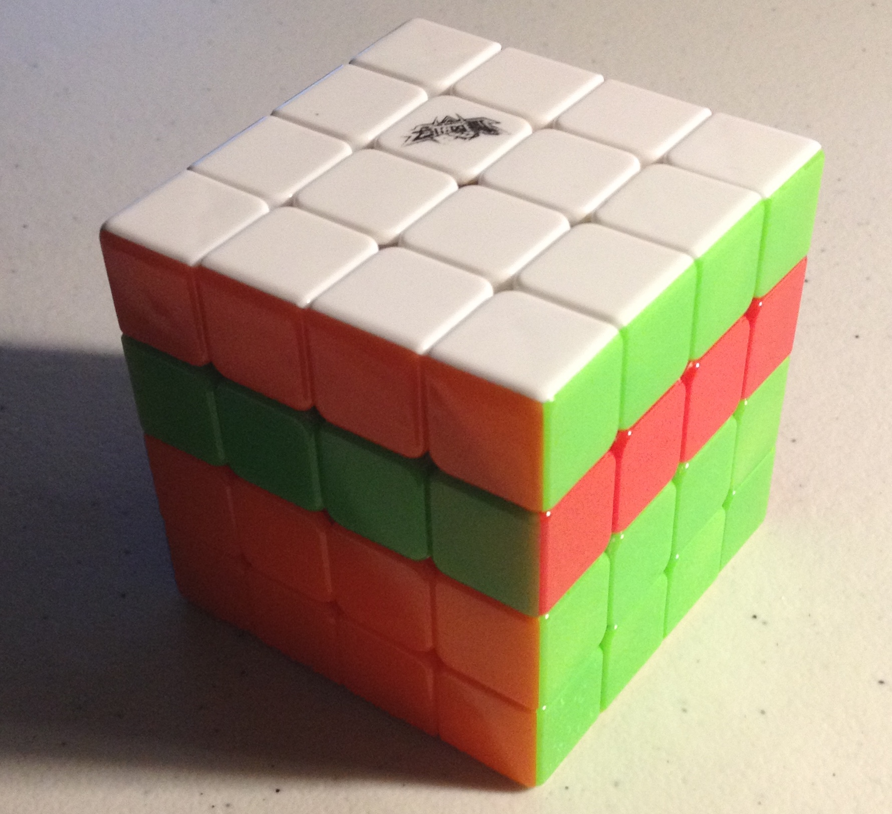

This is Part 1 of a 4-part blog post on the mathematics of the 4x4 Rubik's Cube, its relation to algorithms, and some curious properties of Rubik's Cubes.
You are currently reading Part 1 of this blog post: Part 1: Representations
See Part 2 of this blog post here: Part 2: Permutations
See Part 3 of this blog post here: Part 3: Factoring Permutations
See Part 4 of this blog post here: Part 4: Sequence Order
Table of Contents
Introduction: Why The Rubik's Cube
In this series of four posts, we'll take a look at the 4x4 Rubik's Cube. The Rubik's Cube is an interesting puzzle that has some profound mathematical connections to group theory and combinatorics.
Group theory is a branch of mathematics that applies to any system that exhibits symmetry; combinatorics is the mathematics of counting things.
The Rubik's Cube gives us the opportunity to apply concepts in group theory and combinatorics to better understand how the cube works, and to learn how to apply these principles to real world systems.
Finally, we will wrap up by discussing some of the algorithms that are required to deal with a Rubik's Cube computationally.
In the next two posts, we'll talk more about the mathematical representation of permutations of the Rubik's Cube, and how to use this representation to understand some of the properties of move sequences when applied to the cube.
Why The 4x4 Rubik's Cube
The 4x4 Rubik's cube, also known as the Rubik's Revenge cube, is larger than the standard 3x3 Rubik's Cube - 96 faces, instead of the ususal 36. The 4x4 cube exhibits some particularly interesting properties as a result of having an even number of squares on each edge.
How the Rubik's Cube Works
Let's start with a discussion of cube mechanics, since this is important to coming up with an accurate mathematical model of the cube.
The Pieces
The 4x4 Rubik's Cube consists of six faces of sixteen squares each, for a total of 96 face squares. These face squares are not completely interchangeable, however - the 4x4 cube is actually composed of three types of pieces, called "cubies".
 Figure 1: Corner pieces are green.
Figure 1: Corner pieces are green.
The first type of piece is a corner piece, which contains 3 faces. Note that it is impossible for the corner pieces to change their chirality (direction of rotation). There are 8 corner pieces, each of which can be oriented in 3 different ways.
 Figure 2: Double edge pieces are blue.
Figure 2: Double edge pieces are blue.
The second type of piece is a double edge (dedge) piece. Each edge is composed of two double edges. There are 24 total double edge pieces, which can be further classified into 12 left-handed and 12 right-handed dedge pieces.
 Figure 3: Center pieces are blue.
Figure 3: Center pieces are blue.
Lastly, there are 4 center pieces in the center of each face, for a total of 24 center pieces. Note that each of the center pieces of a given color are interchangeable, unlike the double edge pieces or corners.
Face Notation
To refer to particular faces on the cube, we use six letters to indicate different faces:
U - upper face (the top of the cube)
D - downward face (the bottom of the cube0
F - front face (the front of the cube)
B - back face (the back side of the cube)
L - left face of the cube (on the left side when facing the front F face)
R - right face of the cube
This will help refer to how we will rotate the cube.
Color Notation
In the solved state, each cube face has one of six colors. The orientation of these colors relative to one another is always fixed; the red and orange colored faces, for example, are never adjacent. This is due to the nature of the mechanical pieces that compose the Rubik's Cube.
The standard faces for each color on a solved cube are:
U= WhiteD= YellowF= GreenB= Blue (Back-Blue)L= OrangeR= Red (Red-Right)
Note that on a 3x3 cube, we can always determine the final color a face will have, because the six center pieces on each side of a 3x3 cube always remain fixed.
On a 4x4 cube, however, all four center squares can rotate and move, meaning all 24 center squares are totally interchangeable, and there is no link between the center colors on a 4x4 cube and the final color that will be on that face when the cube is solved.
Move Notation
Using the face notation explained above, we can denote multiple types of moves on the 4x4 Rubik's Cube.
We have 36 total moves that we can make on the 4x4 Rubik's Cube, which can be grouped by the dozen:
L l r R
U u d D
B b f F
L' l' r' R'
U' u' d' D'
B' b' f' F'
2L 2L' 2R 2R'
2U 2U' 2D 2D'
2B 2B' 2F 2F'
Let's go through the details of the notation.
Regular Face Rotations
The regular face turns are denoted with capital letters:
L R U D B F refer to a single clockwise rotation of the
respective face. Here, "clockwise" means the direction
that is clockwise when facing the given face head-on.
Reverse Face Rotations
The ' apostrophe following moves, as in L' R' U' D' B' F',
indicates that the move shoud be a counter-clockwise
rotation of the given face, instead of clockwise.
Double Face Rotations
Rotations that are indicated using a lowercase letter
refer to two-layer rotations: l r u d b f.
 Figure 4: Cube state after move
Figure 4: Cube state after move u.
That is, the lowercase u refers to the clockwise
rotation of the top two layers of the cube;
the lowercase r refers to the clockwise
rotation of the rightmost two
layers of the cube; and so on.
The apostrophe also serves to indicate a
counter-clockwise rotation: 'l r' u' d' b' f'
indicate counter clockwise rotations of the two
left, two right, two upper, two bottom, two back,
and two front layers, respectively.
We have covered the first 24 moves - clockwise and counter-clockwise rotations of single and double layers.
Second Layer Face Rotations

Figure 5: Cube state after move 2U.
The 2 notation indicates a rotation of the second layer only.
For example, 2U refers to the clockwise rotation of the second
layer from the top. This is equivalent to the move sequence
u U'.
Likewise, the apostrophe indicates a counterclockwise rotation.
Computer Representation of a Rubik's Cube
The computer representation we are using is the rubiks-cube-NxNxN-solver library by Github user @dwalton.
We have modified this library to provide additional functionality needed in the project; the fork used in this project is available at git.charlesreid1.com: rubiks-cube-nnn-solver
Using this library, here's how we create a 4x4 Rubik's Revenge cube:
In [1]: from rubikscubennnsolver.RubiksCube444 import RubiksCube444, solved_4x4x4
In [2]: order = 'URFDLB'
In [3]: cube = RubiksCube444(solved_4x4x4, order)
In [4]: cube.print_cube()
U U U U
U U U U
U U U U
U U U U
L L L L F F F F R R R R B B B B
L L L L F F F F R R R R B B B B
L L L L F F F F R R R R B B B B
L L L L F F F F R R R R B B B B
D D D D
D D D D
D D D D
D D D D
Operations and Functionality
Some important functionality:
- Obtaining each side
- Applying rotation
- Applying sequence of rotations
- Each side
- Side face numberings, centers, edges
To obtain each side, use the sides attribute:
In [8]: print(cube.sides)
OrderedDict([('U', <rubikscubennnsolver.RubiksSide.Side object at 0x11172d358>),
('L', <rubikscubennnsolver.RubiksSide.Side object at 0x11172d240>),
('F', <rubikscubennnsolver.RubiksSide.Side object at 0x11172d5c0>),
('R', <rubikscubennnsolver.RubiksSide.Side object at 0x11172d5f8>),
('B', <rubikscubennnsolver.RubiksSide.Side object at 0x11172d518>),
('D', <rubikscubennnsolver.RubiksSide.Side object at 0x11172d390>)])
Each Side object has a long list of methods, including methods to obtain the index numbers of corner, edge, or center faces on a particular side.
To apply a rotation of a single face,
use the rotate() method and pass the
name of the face:
In [10]: cube.rotate("U")
In [11]: cube.print_cube()
U U U U
U U U U
U U U U
U U U U
F F F F R R R R B B B B L L L L
L L L L F F F F R R R R B B B B
L L L L F F F F R R R R B B B B
L L L L F F F F R R R R B B B B
D D D D
D D D D
D D D D
D D D D
Unfortunately, the rotate method does not take sequences of moves, but this is easily resolved:
In [12]: cube = RubiksCube444(solved_4x4x4, order)
In [13]: sequence = "U L U' L'"
In [14]: for move in sequence.split():
...: cube.rotate(move)
...:
In [15]: cube.print_cube()
L U U U
U U U U
U U U U
U B B L
D F F F R L L F U R R R B B B B
L L L L F F F F R R R R B B B U
L L L L F F F F R R R R B B B U
L L L L F F F F R R R R B B B U
D D D D
D D D D
D D D D
B D D D
Face Numbering
Here is the numerical representation of the faces, which we will make extensive use of:
In [6]: cube.print_cube_layout()
01 02 03 04
05 06 07 08
09 10 11 12
13 14 15 16
17 18 19 20 33 34 35 36 49 50 51 52 65 66 67 68
21 22 23 24 37 38 39 40 53 54 55 56 69 70 71 72
25 26 27 28 41 42 43 44 57 58 59 60 73 74 75 76
29 30 31 32 45 46 47 48 61 62 63 64 77 78 79 80
81 82 83 84
85 86 87 88
89 90 91 92
93 94 95 96
Tuple Representation
We have a goal of finding a way of representing the state of the 4x4 Rubik's Revenge using a tuple, which is a mathematical object that will enable us to investigate properties of sequences, moves, and rotations.
It is important to note that the mechanics of the cube restrict some of the 96 total faces to only occur in particular configurations. By using a tuple of 96 integers, we are overspecifying the state of the cube, and we would be able to do much better if our goal were a minimal representation of the Rubik's Cube state.
However, our goal is not a minimal representation of the cube, but a unique representation of the cube. As we will see in a later post, the schema we use does not actually matter, so long as we can represent each unique state of the cube using a sequence of integers of arbitrary length.
Tuple Representation Requirements
The 4x4 cube, in the solved state, has a few characteristics that can be used to indicate a particular permutation or configuration:
- Face indciators
UDFBLR - Colors
WYGBRO - Integers 1-96 to number each face
Here is how the faces representation looks:
In [17]: cube.print_cube()
U U U U
U U U U
U U U U
U U U U
L L L L F F F F R R R R B B B B
L L L L F F F F R R R R B B B B
L L L L F F F F R R R R B B B B
L L L L F F F F R R R R B B B B
D D D D
D D D D
D D D D
D D D D
The equivalent color representation is:
W W W W
W W W W
W W W W
W W W W
O O O O G G G G R R R R B B B B
O O O O G G G G R R R R B B B B
O O O O G G G G R R R R B B B B
O O O O G G G G R R R R B B B B
Y Y Y Y
Y Y Y Y
Y Y Y Y
Y Y Y Y
However, the tuple representation cannot use colors to represent the state of the cube. This is because a tuple representation using "R" to represent each red face would give us no way of distinguishing between the (non-interchangeable) red faces on the cube. For example, if the red-green double edge piece were replaced with a red-blue double edge piece, oriented with the red face at the same location, the n-tuple needs to reflect that this face has a different value than it did the prior move.
For this reason, we must use an integer to index each distinct face:
01 02 03 04
05 06 07 08
09 10 11 12
13 14 15 16
17 18 19 20 33 34 35 36 49 50 51 52 65 66 67 68
21 22 23 24 37 38 39 40 53 54 55 56 69 70 71 72
25 26 27 28 41 42 43 44 57 58 59 60 73 74 75 76
29 30 31 32 45 46 47 48 61 62 63 64 77 78 79 80
81 82 83 84
85 86 87 88
89 90 91 92
93 94 95 96
We can rearrange this into a 96-tuple:
(1 2 3 4 5 6 7 8 9 10 11 12 13 14 15 16 17 18 19 20 21 22 23 24 25 26 27 28 29 30 31 32 33 34 35 36 37 38 39 40 41 42 43 44 45 46 47 48 49 50 51 52 53 54 55 56 57 58 59 60 61 62 63 64 65 66 67 68 69 70 71 72 73 74 75 76 77 78 79 80 81 82 83 84 85 86 87 88 89 90 91 92 93 94 95 96)
If we apply a rotation, for example U R,
we will end up with a different cube:
13 09 05 01
14 10 06 02
15 11 07 03
48 44 40 36
33 34 35 84 61 57 53 49 16 66 67 68 17 18 19 20
21 22 23 24 37 38 39 88 62 58 54 50 12 70 71 72
25 26 27 28 41 42 43 92 63 59 55 51 08 74 75 76
29 30 31 32 45 46 47 96 64 60 56 52 04 78 79 80
81 82 83 77
85 86 87 73
89 90 91 69
93 94 95 65
This particular sequence of moves results in a cube state uniquely represented by the following 96-tuple:
(13 9 5 1 14 10 6 2 15 11 7 3 48 44 40 36 33 34 35 84 21 22 23 24 25 26 27 28 29 30 31 32 61 57 53 49 37 38 39 88 41 42 43 92 45 46 47 96 16 66 67 68 62 58 54 50 63 59 55 51 64 60 56 52 17 18 19 20 12 70 71 72 8 74 75 76 4 78 79 80 81 82 83 77 85 86 87 73 89 90 91 69 93 94 95 65)
Tuple Representation
Now, we have managed to find a unique representation for any given cube state by labeling each individual face 1-96.
But we aren't quite done yet. It turns out that our statement, that our representation should treat each face as unique, is not strictly true for all 96 faces.
The square pieces are completely interchangeable, due to the fact that they are not connected to any other faces (and therefore have no orientation or way of differentiating them from one another).
If we are doing anything that involves counting configurations, it is important to account for this fact, by treating the following groups of face indices as interchangeable:
(6, 7, 10, 11)
(22, 23, 26, 27)
(38, 39, 42, 43)
(54, 55, 58, 59)
(70, 71, 74, 75)
(86, 87, 90, 91)
In Part 2 and Part 3 of this series, we will encounter these concepts again, and it will become more clear what these caveats and notes mean through example.
Following is a preview of Part 2 of this 3-part blog post.
Preview of Part 2
In Part 2 of this series, we will utilize the n-tuple representation of the 4x4 Rubik's Cube in order to write permutations of the cube corresponding to specific states, and turn a sequence of moves on the cube into permutations.
We will also create a map for each type of move, telling us where each face index will end up.
In Part 3 we will use these to predict properties of rotations applied to the 4x4 Rubik's Cube.
References
-
"Rubik's Cube". Charlesreid1.com wiki, Charles Reid. Edited 11 January 2017. Accessed 11 January 2017. <https://charlesreid1.com/wiki/Rubiks_Cube>
-
"Rubik's Revenge". Charlesreid1.com wiki, Charles Reid. Edited 11 January 2017. Accessed 11 January 2017. <https://charlesreid1.com/wiki/Rubiks_Revenge>
-
"Rubik's Cube/Tuple". Charlesreid1.com wiki, Charles Reid. Edited 11 January 2017. Accessed 11 January 2017. <https://charlesreid1.com/wiki/Rubiks_Cube/Tuple>
-
"Rubik's Cube/Permutations". Charlesreid1.com wiki, Charles Reid. Edited 11 January 2017. Accessed 11 January 2017. <https://charlesreid1.com/wiki/Rubiks_Cube/Permutations>
-
"Github - dwalton76/rubiks-cube-NxNxN-solver". dwalton76, Github Repository, Github Inc. Accessed 11 January 2017. <https://github.com/dwalton76/rubiks-cube-NxNxN-solver>
-
"Rubik's Cube NxNxN Solver". Git repository, git.charlesreid1.com. Charles Reid. Updated 11 January 2017. <https://git.charlesreid1.com/charlesreid1/rubiks-cube-nnn-solver>
-
"Rubiks Cube Cycles". Git repository, git.charlesreid1.com. Charles Reid. Updated 11 January 2017. <https://git.charlesreid1.com/charlesreid1/rubiks-cube-cycles>